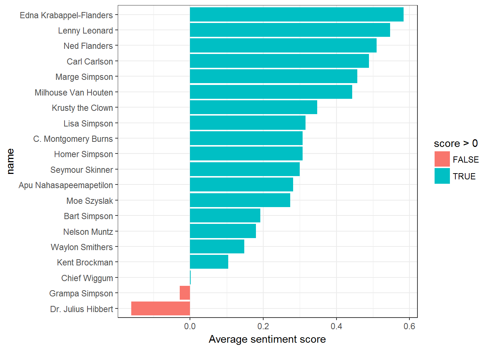
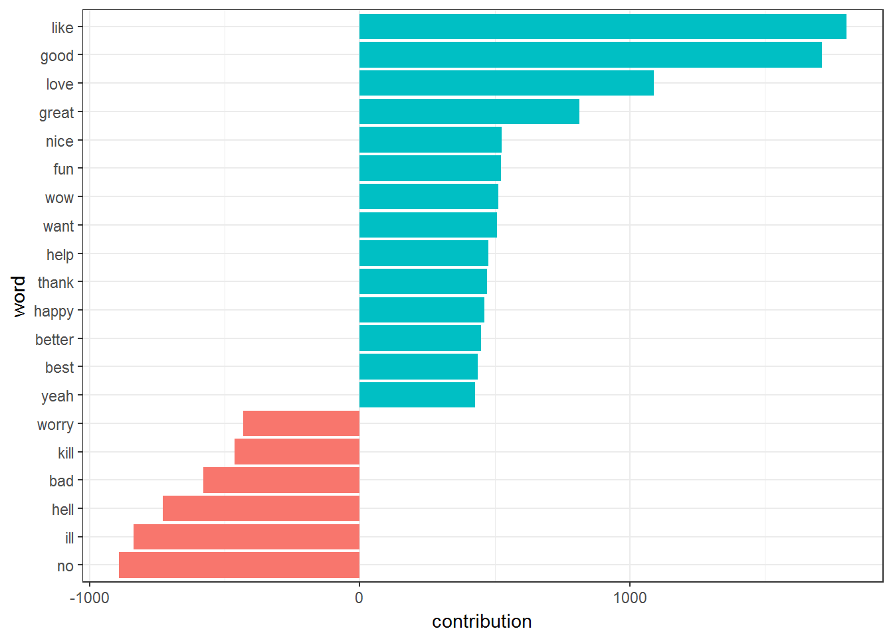

Chapter 47 Sentiment Analysis
47.1 Postive Characters and Not so Positive Characters
We investigate how often positive and negative words occurred in these Simpsons script lines. Which characters were the most positive or negative overall?
We will use the AFINN sentiment lexicon, which provides numeric positivity scores for each word, and visualize it with a bar plot.We limit the sentiment analysis to the Top 20 characters who have spoken the most in the episodes.
visualize_sentiments <- function(SCWords) {
SCWords_sentiments <- SCWords %>%
inner_join(get_sentiments("afinn"), by = "word") %>%
group_by(name) %>%
summarize(score = sum(score * n) / sum(n)) %>%
arrange(desc(score))
SCWords_sentiments %>%
mutate(name = reorder(name, score)) %>%
ggplot(aes(name, score, fill = score > 0)) +
geom_col(show.legend = TRUE) +
coord_flip() +
ylab("Average sentiment score") + theme_bw()
}
Top20Characters = head(TopCharacters,20)$name
SCWordsTop20Characters <- SC %>%
unnest_tokens(word, normalized_text) %>%
filter(name != "NA") %>%
filter( name %in% Top20Characters) %>%
dplyr::count(name, word, sort = TRUE) %>%
ungroup()
visualize_sentiments(SCWordsTop20Characters)
We observe the following
- Edna Flanders has the most positive sentiment.
- Marge Simpson is the most postive among the Simpsons.
- Bart Simpson is the most negative among the Simpsons.
- Dr. Julius Hilbert is the most negative among the Top 20 characters.
47.2 Postive and Not So Postive Words
The following graph shows the Twenty high positive and the negative words.
contributions <- SC %>%
unnest_tokens(word, normalized_text) %>%
filter(name != "NA") %>%
dplyr::count(name, word, sort = TRUE) %>%
ungroup() %>%
inner_join(get_sentiments("afinn"), by = "word") %>%
group_by(word) %>%
summarize(occurences = n(),
contribution = sum(score))
contributions %>%
top_n(20, abs(contribution)) %>%
mutate(word = reorder(word, contribution)) %>%
ggplot(aes(word, contribution, fill = contribution > 0)) +
geom_col(show.legend = FALSE) +
coord_flip() + theme_bw()
47.3 Postive and Not So Postive Script Lines
We examine the positive and the negative Script Lines.We filtered out messages that had fewer than five words that contributed to sentiment.
sentiment_lines = SC %>%
unnest_tokens(word, normalized_text) %>%
filter(name != "NA") %>%
inner_join(get_sentiments("afinn"), by = "word") %>%
group_by(id,word) %>%
summarize(sentiment = mean(score),
words = n()) %>%
ungroup() %>%
filter(words >= 5) The scriptlines having top Ten positive sentiments are
| name | Text |
|---|---|
| Applicants | roll on roll on alpha tau – bow wow wow wow bow wow wow wow |
| Homer Simpson | ill let you try them on right after i decide if these videos are funny or die funny funny die die funny funny but the guy died |
| Chief Wiggum | wow-wow-wow-wow-wow thats-thats-thats crazy-crazy woo-woo-woo hello-hello lou-lou |
| Little Homer | fun fun fun fun fun fun fun fun |
| Itchy & Scratchy Singers | they love they share they share and love and share love love love share share share the itchy scratchy showwww |
| Jinglers | come to uncle moes for family fun its good good good good good good good |
| Indian Woman | love love love love love im in love with lovely johnny |
| Sideshow Mel | cmon they cant all have loved it loved it loved it loved it loved it despite absence of flubber glayvin |
| Marge Simpson | boy things are going really good good good good good good good good hmm look at that freckle i should dig that out |
| Melanie Griffith | this rooms nice this rooms nice too this rooms nice too this rooms nice this rooms nice this rooms nice too |
| Lisa Simpson | my great-great great-great great grandmother was a native american she was a member of the |
| Homer Simpson | doh doh doh doh doh doh doh woo woo woo woo woo woo hoo stu stu stu stu-pid flanders |
| Krusty the Clown | love love love love love |
| Milhouse Van Houten | i hold in my hand another diary that of my great-great-great great-great grandfafa milford van houten |
| Carolers | happy happy happy happy hunting happy happy happy happy hunting |
The scriptlines having top Ten NOT so positive sentiments are
| name | Text |
|---|---|
| Bart Simpson | bastard bastard bastard bastard bastard bastard |
| Bart Simpson | hell hell hell hell hell hell hell hell hell hell hell hell hell |
| Singers | bad cops bad cops bad cops bad cops springfield cops are on the take but what do you expect for the money we make whether in a car or on a bus we dont mind using excessive force bad cops bad cops bad cops bad cops |
| Homer Simpson | oh everythings cruel according to you keeping him chained up in the backyard is cruel pulling on his tail is cruel yelling in his ears is cruel everything is cruel so excuse me if im cruel |
| Homer Simpson | crap crap crap crap crap crap crap crap |
| Lisa Simpson | stop it i cheated cheated cheated cheated cheated cheated |
| Helen Morehouse | i wanted maryanne-on-gilligans-island ugly not cornelius-on-the-planet-of-the-apes ugly tv ugly not ugly ugly |
| Grampa Simpson | dead dead dead dead dead dead |
| Prisoners | kill the rat kill the rat kill the rat kill the rat kill the rat kill the rat kill the rat kill the rat kill the rat |
| Chief Wiggum | krusty the clown you are under arrest for armed robbery you have the right to remain silent anything you say blah blah blah blah blah blah blah blah blah |
| Krabappel’s Mouth | blah blah blah blah blah blah blah blah blah |
| Krabappel’s Mouth | blah blah blah blah blah blah blah blah blah |
| Dr. J. Loren Pyror | blah blah blah blah blah blah blah |
| Dr. J. Loren Pyror | blah blah blah blah blah blah blah blah blah |
| Homer Simpson | so a few people wont get a few letters boo-hoo you know the kinda letters people write dear somebody-you-never-heard-of how is so-and-so blah blah blah blah blah blah blah yours truly some bozo big loss |
| Krusty the Clown | blah blah blah blah moses blah blah blah blah some prayer |
| Homer Simpson | im mr burns blah blah blah do this do that blah blah blah |
| Marge Simpson | legalized gambling is a bad idea you can build a casino over my dead body blah blah blah blah blah blah blah blah blah blah blah blah blah |
| Kent Brockman | by the way the spacecraft is still in extreme danger may not make it back attempting risky reentry blah blah blah blah blah well see you after the movie |
| Marge Simpson | hey hey over here here bully bully bully bully bully |
| Bart Simpson | daddys on fire daddys not on fire daddys on fire daddys not on fire daddys on fire |
| Homer Simpson | oh and that dr hibbert was so boring homer weve got to get that lump checked out homer we must discuss your test results homer weve got to find you a donor blah blah blah blah blah blah |
| Marge Simpson | ill do it ill do it ill do it ill do it ill do it |
| C. Montgomery Burns | youre fired youre all fired fired fired fired |
| TABITHA | trouble-istic girl makes your troubulations grow double trouble-istic when you try to tell me no trouble trouble oh yeah trouble and the home of the brave |
| Homer Simpson | oh yeah blah blah blah blah blah blah blah blah blah |
| Homer Simpson | blah blah blah blah blah blah |
| Other Men | penalty penalty penalty penalty penalty penalty |
| Bart Simpson | lame lame lame lame have it lame superman dies aquaman dies casper dies caveman robin black robin born-again robin |
| Lisa Simpson | sad sad sad sad sad sad sad sad sad cute this one |